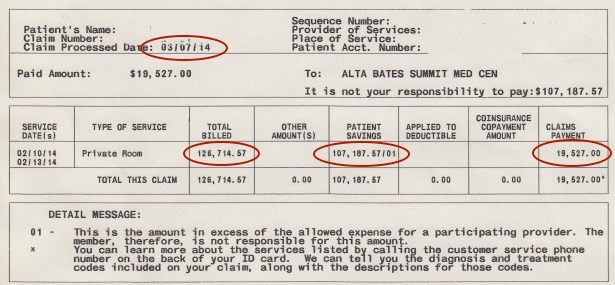
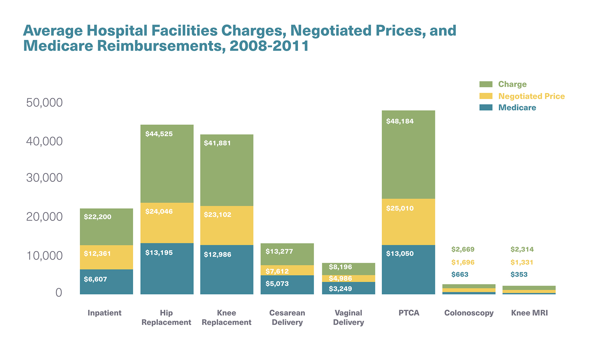

The Forces That Shape the Most Expensive Health System in the World
The Affordable Care Act (ACA) has been the most aggressively debated topic for many years. Opponents say it doesn't work, infringes on rights to choose, increases insurance premiums, and must be repealed. Supporters argue that millions now have health coverage who didn't before, many have seen premiums lowered as well, and repealing the ACA would result in taking health coverage from the most financially vulnerable.
What's actually wrong with the healthcare economy, and why doesn't it work? Experts often cite dozens of problems that require dozens of separate solutions. Indeed, this is the way policy has been looking at the problem. The result has been a micromanaged industry with many unhappy doctors and practitioners. Many patients are also unhappy. Receiving care has become highly impersonal and fragmented. Our policies has been choosing trade-offs: more coverage but less functionality.
Perhaps we've erred in how we've been viewing the problem. Shaping our perspective of the obstacle impacts the way we look at solutions. In this light, we can reduce the factors that shape our expensive health system to just 3: technological progress, nonexistent market competition, and misaligned incentives.
Technological Advancement
Technological innovations, like genetic sequencing, nano-scale treatment, and ultraprecise robotic surgeries, extend life, eliminate suffering, and prolong health. But technology is also expensive, and the more it is used, the less positive effects that we derive from them. This is known as the Law of Diminishing Returns.
The law of diminishing returns in medicine states that as medical treatment given to a patient increases, the benefits of each additional treatment decreases.8 In other words we can do too much of one thing.
Consider breast cancer mammography screening. A study shows that excessive mammography screening results in overdiagnosis of breast cancer, subjecting patients to often-harmful treatment of a tumor that would never have harmed them.9 Estimates show that 54% of breast cancer detected from mammograms screening are a result of overdiagnosis.10
Cesarean deliveries have also risen over the years, contributing to higher costs without increased beneficial returns. A recent study showed Cesarean Delivery should be kept at a rate between 19% as a population, near the level at which the benefits plateau.6 Today, approximately 33% of deliveries are C-Section, largely due to the easelibrary_books of technological use and higher defensive medicine, resulting in unnecessary treatments.7
The rapid growth of treatment options has outpaced the ability to measure effectiveness. As with coronary artery stents,12 some technological advancements add little value to patients, and get used far too often.
There’s an economic explanation for the use of too much of the wrong technology and the neglected development of productive technology. As we’ll explore, the healthcare market lacks the proper structure to incentivize and promote a proper economic environment.
Disfunctional Market
Inadequate Demand
Demand in healthcare is broken. Why? In economic terms, price elasticity barely exists. Price elasticity is how sensitive people are to prices. It’s the underlying premise behind demand. People choose what they purchase based on how much it costs, and how much they’re willing to pay for it. This is a subtle, but monumental, importance in why we don’t get what we want out of our healthcare market: people don’t choose their medical care with their wallets!
The current insurance system eliminates the patient from the price negotiation. In economic sense, we are price INelastic with our medical care. As consumers of medical care, we never directly see the cost of care and never truly choose our doctor or hospital based on their price.18 By imposing deductibleslibrary_books and copaymentslibrary_books, insurance companies and government coverage attempt to have people feel the direct economic burder of medical care. It’s not enough, however.
Incohesive cost structure
The price negociation between provider and insurance is among the biggest problems. In our health market, the insurance company, rather than the consumer, negotiates price. As a result, we see an ultimate insurer-provider struggle. This perpetual dance results in inflated prices, lack of price transparency, and elevated insurance costs. But how did this come to be? Let’s consider the struggle itself.
As with any experienced negotiator, the hospital (or private practice) sets a high price for every given medical treatment. The hospital will also look for all possible medical reasons to charge, even if they are barely justifiable. The insurance company then negotiates down the prices as much as possible, also attempting not to pay for some procedures that were billed. For example, a hospital may charge $128,714 for an eye surgery, but the insurance pays only $19,527. That’s an 85% difference!
Image provide by David Belk, MD from True Cost of Healthcare
Some may argue that the insurance company is negotiating down prices and perhaps they are reaching an actual market equilibrium. Not exactly. New research on medical prices for private insurance revealed markets where not functioning properly. In other words, supply and demand equilibrium - as we normally see it in markets like automobiles - didn't exist.18 Quality was not correlated to price, either. Price varied across the country so much, that the most expensive hospital charged 17 times more than the cheapest hospital for the same procedures, without significant differences in quality.18
Image from Zack Cooper et al in The price ain’t right? Hospital prices and health spending on the privately insured. National Bureau of Economic Research
The results of such a sysstem turn out to be disastrous. Prices are bloated and unregulated by any consistent market means. Hospitals merge to gain monopoly powerlibrary_books to have price-bargaining leverage.18. The biggest tragedy is that the uninsured receive the same tremendous price that the insurance companies are quoted, and enter into often-extreme debt, as a result.
Misaligned Incentives
Economic incentives are the most powerful drivers for progress. They’re also the reason for the symptoms we’ve experienced in healthcare. Incentives in the health system are unique compared to most other markets. The doctor’s market power and defensive medicine are prime examples of misaligned incentives.
Physician’s Market Power
Doctors have a unique control of their market. Physician-Induced Demand is the power that the doctor has to create more demand for his own product.15 Not surprisingly, the government has been trying to mitigate this ability.14
Physician induced-demand is possible because the doctor’s medical expertise is difficult to challenge and compare(termed Information Asymmetry). At any given doctor’s visit, he has the freedom to prescribe tests with his own equipment, schedule follow-ups, and explore long-term treatment options that may not create health value to the patient, but are driven by economic incentives (My personal opinionlibrary_books). We observe similar behavior with car mechanics and lawyers. The major distinction is that consumers pay for their services directly and can compare prices and quality relatively easily.
Atul Gawande in “The Cost Conundrum” explored the high-cost outlier town of McAllen, Texas, and makes a connection with physician-induced demand and high cost of care. Studies have showed an income shock (say, cut reimbursements for a procedure) to physicians result in small percentage increases in treatments.15 The fee-for-service (FFS) model of reimbursing doctors is a contributing factor in the incentive towards inducing demand.15
Defensive Medicine
The increasing frequency of malpractice suits against doctors has created a culture of defensive treatment protocols. These are tests and treatments done only to negate any possible suits of medical negligence. Surveys show that 91% of physicians practice defensive medicine.4 In 2003, US Department of health and Human Services estimated the cost of defensive medicine to be $60 billion per year, while in 2008, PricewaterhouseCoopers' Health Research Institute estimated the figure to be at $210 billion per year.3
A Market Solution
When finding solutions, as is in Medicine, it's vital to treat the underlying ailment, rather than to treat the symptoms. Any progress must focus on the economic laws we observe everyday: Market regulation through price demand and supply.
Harvard professor, Regina Herzlinger, in Who Killed Healthcare?16 explores free market solutions in healthcare. Regina Herzlinger draws a system revolving around the fundamental principles of economic incentives and price demand from patients. Three components drive her consumer-driven solutions: insurance packages, medical groups, and proper incentives.
Fix Demand - Insurance Packages
She states that insurance packages could allocate a complete sum of money, $40,000 per year, for example, that can be used only towards medical care. Money not used by the individual at the end of the period would be partly reimbursed to the patient. As a result, patients would become price-sensitive, and would undoubtedly shop for medical care more efficiently.
Fix Provider Incentives - Medical Teams
A second part of a market solution revolves around the medical team. Regina Herzinlinger examines company-structured medical groups. One group type specializes in general care. The other group types specialize in medical conditions, like diabetes or heart disease. The medical groups are paid a percentage of the $40,000 allocated to the insured individual (ex: $30,000).
Of course, patients would be able to exit the medical provider contract if pre-determined care requirements are not being met. if the patient is being neglected or quality decreases, the patient, like any consumer, can switch medical groups - one that provides either cheaper service or better quality care, or both.
Fix Patient Incentives
The financial reimbursements for patients incentivize them to maintain good health. They would keep a percentage of the unused insurance package for their own use. In addition, they would have financial penalties for not following explicit protocols set by their care team.
Creating a system with the proper market foundations and incentives is far from easy. Restructuring an entire system is a political and economic struggle. But, in a country of bold entrepreneurs and innovators, there is hope for creating a better business model of healthcare.
Citations
1.Belk, David. “True Cost of Healthcare.” Truecostofhealthcare.net. Acc. 28 Dec. 2016.
2. “Design and Development of the Diagnosis Related Group (DRG).”Centers for Medicare and Medicaid Services. PBL-038. Pub. 1 Oct. 2016. Acc. 28 Dec. 2016. Web.
3. New Study Finds 91% of Physicians Practice Defensive Medicine. Medscape. Jun 28, 2010.
4. Bishop TF, Federman AD, Keyhani S. Physicians’ Views on Defensive Medicine: A National Survey. Arch Intern Med. 2010;170(12):1081-1083. doi:10.1001/archinternmed.2010.155
5. OECD (2016), Pharmaceutical spending(indicator).Acc. 28 Dec 2016.
6. Molina G, Weiser TG, Lipsitz SR, Esquivel MM, Uribe-Leitz T, Azad T, Shah N, Semrau K, Berry WR, Gawande AA, Haynes AB. Relationship Between Cesarean Delivery Rate and Maternal and Neonatal Mortality. JAMA. 2015;314(21):2263-2270. doi:10.1001/jama.2015.15553
7. Thielking, Megan. “Sky-high C-section rates in the US don’t translate to better birth outcomes.” STAT. 1 Dec. 2015. Acc. 29 Dec. 2016. Web
8. James W. Mold, MD, MPH, Robert M. Hamm, PhD. Laine H. McCarthy, MLIS. “The Law of Diminishing Returns in Clinical Medicine: How Much Risk Reduction is Enough?” J Am Board Fam Med May-June 2010 vol. 23 no. 3 371-375
9. Løberg, Magnus et al. “Benefits and Harms of Mammography Screening.” Breast Cancer Research : BCR 17.1 (2015): 63. PMC. Web. 29 Dec. 2016.
10. Zahl PH, Strand BH, Maehlen J: Incidence of breast cancer in Norway and Sweden during introduction of nationwide screening: prospective cohort study. BMJ 328 (7445): 921-4, 2004.
11. Loftus, Peter. “U.S. Drug Spending Climbs.” Wall Street Journal. Pub. 14 Apr. 2016. Acc. 29 Dec. 2016.
12. Gawande, Atul. “Overkill.” Annals of Healthcare, The New Yorker. Pub. 11 May 2015. Acc. 29 Dec. 2016. Web
13. Gawande, Atul. (2009)."The cost conundrum." The New Yorker, June 1.
14. Pear, R. (2009).“Health care spending disparities stir a fight.” The New York Times. Pub. 2009. Acc 29 Dec. 2016.
15. Johnson, EM.“Physician-Induced Demand.” Massachusets Institute of Technology: Encyclopedia of Health Economics. Vol 3. Cambridge, MA. Pub. 2014. Acc. 29 Dec. 2016.
16. Herzlinger, Regina E. Who Killed Health Care?: America's $2 Trillion Medical Problem--and the Consumer-driven Cure. New York: McGraw Hill, 2007. Print.
17. Bradford, W. David, and Robert E. Martin.“Supplier-Induced Demand and Quality Competition: An Empirical Investigation.” Eastern Economic Journal, vol. 21, no. 4, 1995, pp. 491–503.
18. Cooper, Zack, et al. The price ain’t right? Hospital prices and health spending on the privately insured. No. w21815. National Bureau of Economic Research, 2015.